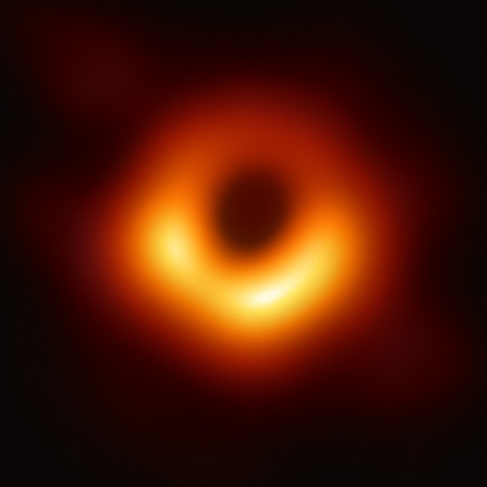
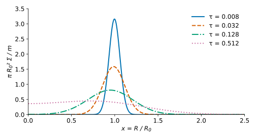
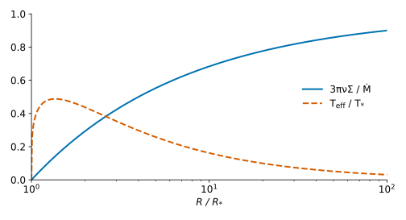
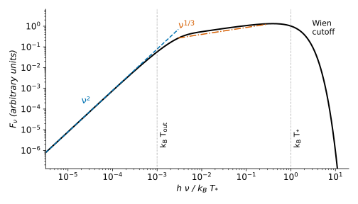

16 Accretion Disks
Accretion disks are found in a wide range of astrophysical systems. Young stars are surrounded by protoplanetary disks, which are the sites of planet formation. For example, the ALMA image of the disk around the young star HL Tau shows a series of bright rings separated by dark gaps, which might have been carved by forming planets (ALMA Partnership et al. 2015). Accretion disks around white dwarfs, neutron stars, and stellar-mass black holes power cataclysmic variables and X-ray binaries. On much larger scales, accretion onto supermassive black holes powers active galactic nuclei (AGN). The Event Horizon Telescope image of the black hole at the center of the galaxy M87 shows the emission from the innermost region of one such accretion flow (Figure 16.1). Note that the gas around this black hole is very hot and dilute, so this flow is not well described by the thin disks that we will discuss in this chapter.

Disks are so common because gas falling towards a central object almost always has some angular momentum. The gas can lose energy, for example through shocks and radiation, much more easily than it can lose angular momentum. Since, for a given angular momentum, the orbit with the lowest energy is a circular orbit, the gas settles on circular orbits in the plane perpendicular to its angular momentum. In other words, the gas forms a ring at the circularization radius \(R_c\), where the specific angular momentum of a circular orbit, \(\sqrt{G M R_c}\), is equal to that of the gas. However, gas on circular orbits cannot fall onto the central object. In order to be accreted, the gas needs to get rid of its angular momentum. In this chapter, we will see that viscosity can do this, by transporting angular momentum outwards and mass inwards. We will then compute the luminosity and the spectrum of a disk in a steady state.
16.1 Vertically integrated equations
We use cylindrical coordinates \((R, \phi, z)\) and we take the disk to lie in the plane \(z = 0\). In the in-class worksheet (Section 16.7), we will show that the continuity equation in cylindrical coordinates reads \[ \frac{\partial \rho}{\partial t} + \frac{1}{R} \left[ \frac{\partial (\rho R v_R)}{\partial R} + \frac{\partial (\rho v_{\phi})}{\partial \phi} \right] + \frac{\partial (\rho v_z)}{\partial z} = 0 . \tag{16.1}\] We assume that the disk is axisymmetric, \(\partial_{\phi} = 0\), and thin, so that we can neglect \(v_z\). We also assume that the gas rotates with angular velocity \(\Omega\), that is \(v_{\phi} = R \Omega\). It is convenient to introduce the surface density \[ \Sigma = \int_{- \infty}^{\infty} \rho \mathrm{d} z , \tag{16.2}\] which is the mass per unit area of the disk. If we integrate Equation 16.1 in the vertical direction, we obtain \[ \frac{\partial \Sigma}{\partial t} + \frac{1}{R} \frac{\partial (R \Sigma v_R)}{\partial R} = 0 . \tag{16.3}\]
To find an equation for \(v_R\), we use the conservation of angular momentum (Chapter 6). The \(z\)-component of the angular momentum density is \(\rho R v_{\phi} = \rho R^2 \Omega\). The pressure does not exert any torque on the gas, since \(\partial_{\phi} p = 0\), and neither does the gravity of the central object. However, the viscous stresses do. The only component of the viscous stress tensor (Equation 15.13) that can exert a torque on the gas is \[ \tau_{R \phi} = \rho \nu R \frac{\partial \Omega}{\partial R} . \tag{16.4}\] Note that \(\tau_{R \phi}\) depends only on the shear, \(R \, \partial_R \Omega\), so it vanishes for a rigid rotation, as it should. The flux of angular momentum in the radial direction is then \(\rho R v_{\phi} v_R - R \tau_{R \phi}\), where the second term is the torque per unit area exerted by the viscous stresses. Accordingly, the conservation of angular momentum reads \[ \begin{aligned} &\frac{\partial (\rho R^2 \Omega)}{\partial t} + \frac{1}{R} \frac{\partial}{\partial R} \left( \rho R^3 \Omega v_R - \rho \nu R^3 \frac{\partial \Omega}{\partial R} \right) \\ &\qquad + \frac{\partial (\ldots)}{\partial z} = 0 . \end{aligned} \tag{16.5}\] When we integrate in the vertical direction, the last term vanishes and we find \[ \frac{\partial (\Sigma R^2 \Omega)}{\partial t} + \frac{1}{R} \frac{\partial (\Sigma R^3 \Omega v_R)}{\partial R} = \frac{1}{R} \frac{\partial}{\partial R} \left( \nu \Sigma R^3 \frac{\partial \Omega}{\partial R} \right) , \tag{16.6}\] where \(\nu\) now denotes the density-weighted average of the viscosity, \(\nu \Sigma = \int \rho \nu \mathrm{d} z\).
We still need an equation for \(\Omega\), which is given by the radial component of the momentum equation. The radial pressure gradient term is of order \(p / (\rho R) \sim c_s^2 / R\). As we will see below, this is smaller than the gravitational acceleration, \(G M / R^2 = \Omega^2 R\), by a factor \((H / R)^2\), where \(H\) is the thickness of the disk. So, for a thin disk, the gas moves on nearly circular Keplerian orbits. The angular velocity and the specific angular momentum \(j\) of a Keplerian disk are \[ \Omega = \left( \frac{G M}{R^3} \right)^{1 / 2}, \qquad j = R^2 \Omega = \sqrt{G M R} . \tag{16.7}\] Since \(\partial_R \Omega = - \frac{3}{2} \Omega / R\), we have \(\nu \Sigma R^3 \partial_R \Omega = - \frac{3}{2} \nu \Sigma j\), and Equation 16.6 can be written as \[ \frac{\partial (\Sigma j)}{\partial t} + \frac{1}{R} \frac{\partial}{\partial R} \left[ R \Sigma j \left( v_R + \frac{3}{2} \frac{\nu}{R} \right) \right] = 0 . \tag{16.8}\] This is a conservation law for the angular momentum per unit area \(\Sigma j\). The first contribution to the flux, \(\Sigma j v_R\), is the angular momentum carried by the gas as it moves in the radial direction. The second contribution, \(\frac{3}{2} \nu \Sigma j / R\), is due to viscosity, and it is always positive. In other words, viscosity transports angular momentum outwards. This makes sense, because \(\Omega\) decreases with \(R\), so each ring of gas rotates faster than the ring just outside of it. The friction between the two rings slows down the inner ring and speeds up the outer one. Since \(j\) increases with \(R\), the inner ring, having lost angular momentum, has to move inwards.
16.2 Viscous evolution
We now eliminate \(v_R\) to obtain an equation for \(\Sigma\) alone. Using Equation 16.3, we can rewrite the LHS of Equation 16.6 as \[ \begin{aligned} &\frac{\partial (\Sigma R^2 \Omega)}{\partial t} + \frac{1}{R} \frac{\partial}{\partial R} \left( R \Sigma v_R \cdot R^2 \Omega \right) \\ &\qquad = R^2 \Omega \left[ \frac{\partial \Sigma}{\partial t} + \frac{1}{R} \frac{\partial (R \Sigma v_R)}{\partial R} \right] + \Sigma v_R \frac{\partial (R^2 \Omega)}{\partial R} \\ &\qquad = \Sigma v_R \frac{\partial (R^2 \Omega)}{\partial R} , \end{aligned} \tag{16.9}\] where we have used the fact that \(\Omega\) depends only on \(R\). Combining this with Equation 16.6 yields \[ R \Sigma v_R = \left[ \frac{\partial (R^2 \Omega)}{\partial R} \right]^{- 1} \frac{\partial}{\partial R} \left( \nu \Sigma R^3 \frac{\partial \Omega}{\partial R} \right) . \tag{16.10}\] For a Keplerian disk, \(\partial_R (R^2 \Omega) = \frac{1}{2} R \Omega = \frac{1}{2} \sqrt{G M} R^{- 1 / 2}\) and \(\nu \Sigma R^3 \partial_R \Omega = - \frac{3}{2} \sqrt{G M} \nu \Sigma R^{1 / 2}\), so \[ R \Sigma v_R = - 3 R^{1 / 2} \frac{\partial}{\partial R} \left( \nu \Sigma R^{1 / 2} \right) . \tag{16.11}\] Plugging this into the continuity equation, Equation 16.3, gives \[ \boxed{\frac{\partial \Sigma}{\partial t} = \frac{3}{R} \frac{\partial}{\partial R} \left[ R^{1 / 2} \frac{\partial}{\partial R} \left( \nu \Sigma R^{1 / 2} \right) \right] .} \tag{16.12}\] This is a diffusion-like equation for \(\Sigma\), similar to those we have discussed in Chapter 15. Note that the equation is nonlinear if \(\nu\) depends on \(\Sigma\). We will study some of its properties in Exercise 16.2 and Exercise 16.3, and in the in-class worksheet.
To see how this works, we consider a ring of mass \(m\) that is initially located at \(R = R_0\), and we take \(\nu\) to be constant. In this case, Equation 16.12 can be solved exactly (Lynden-Bell and Pringle 1974). The solution is shown in Figure 16.2 as a function of \(x = R / R_0\) and of the dimensionless time \(\tau = 12 \nu t / R_0^2\). The ring spreads both inwards and outwards. As time goes on, most of the mass moves inwards and is accreted by the central object, while a small fraction of the mass moves to large radii, carrying with it almost all of the angular momentum. In other words, the disk can accrete mass while conserving its angular momentum, as long as some of the gas moves outwards.

16.2.1 Accretion timescale
Equation 16.11 tells us that the radial velocity is of order \(v_R \sim \nu / R\). This is also what we would expect from dimensional analysis, since \(\nu\) has units of \(\mathrm{m^2\,s^{-1}}\). So the typical timescale for accretion is \[ t_* \sim \frac{R}{v_R} \sim \frac{R^2}{\nu} = \frac{R}{v_{\phi}} \frac{v_{\phi} R}{\nu} = \frac{\mathrm{Re}}{\Omega} , \tag{16.13}\] where \(\mathrm{Re} = v_{\phi} R / \nu\) is the Reynolds number of the disk. The Reynolds numbers of astrophysical disks are very large, so \(t_* \gg \Omega^{- 1}\). In other words, the gas completes many orbits before being accreted.
The previous Example shows that the molecular viscosity is too small to explain the accretion of gas in disks. Instead, the viscosity to use is an effective viscosity \(\nu_T \gg \nu\) due to turbulence (Chapter 17). What is the source of this turbulence? We will see in Chapter 23 that a weak magnetic field makes the disk unstable, and that the resulting turbulence can transport angular momentum. For the moment, we estimate \(\nu_T\) on dimensional grounds. The disk is in hydrostatic equilibrium in the vertical direction, with a scale height \[ H = \frac{c_s}{\Omega} , \tag{16.15}\] where \(c_s\) is the sound speed, which is equal to \(c_{\mathrm{iso}}\) for an isothermal disk (Exercise 16.1). The largest turbulent eddies cannot be larger than \(H\), and their velocity cannot be much larger than \(c_s\), otherwise they would produce shocks and be dissipated. So we write \[ \nu_T = \alpha c_s H = \alpha \Omega H^2 , \qquad \alpha \lesssim 1 . \tag{16.16}\] This is the so-called α-viscosity model of Shakura and Sunyaev (1973). Observations and simulations suggest \(\alpha \sim 0.01\)–\(0.1\). For the solar nebula at \(1\,\mathrm{AU}\), we have \(H / R = c_s / v_{\phi} \approx 0.035\), and \(\alpha = 0.01\) gives \(t_* \sim R^2 / \nu_T = \alpha^{- 1} (R / H)^2 \Omega^{- 1} \sim 10^4\,\mathrm{yr}\). Note also that the radial pressure gradient term is of order \(c_s^2 / R = \Omega^2 H^2 / R\), which is smaller than the gravitational acceleration \(\Omega^2 R\) by the factor \((H / R)^2\) that we anticipated in Section 16.1.
16.3 Steady disks
We now look for steady-state solutions, that is solutions with \(\partial_t = 0\). These describe a disk that is fed at a constant rate at large radii, for example by a companion star in a binary system. From the continuity equation, Equation 16.3, it follows that \(R \Sigma v_R\) is constant, so we can write \[ 2 \pi R \Sigma v_R = - \dot{M} , \tag{16.17}\] where \(\dot{M} > 0\) is the accretion rate. Similarly, Equation 16.6 tells us that the total flux of angular momentum through a ring of radius \(R\) is constant, \[ 2 \pi \left( \Sigma R^3 \Omega v_R - \nu \Sigma R^3 \frac{\partial \Omega}{\partial R} \right) = - \dot{J} , \tag{16.18}\] where \(\dot{J}\) is the rate at which angular momentum is carried onto the central object. We use Equation 16.17 to eliminate \(v_R\) and we find \[ \dot{M} R^2 \Omega + 2 \pi \nu \Sigma R^3 \frac{\partial \Omega}{\partial R} = \dot{J} . \tag{16.19}\]
To find \(\dot{J}\), we need a boundary condition at the surface of the central star, \(R_*\). If the star rotates more slowly than the Keplerian velocity at its surface, then \(\Omega\) has to decrease from the Keplerian value in the disk to the angular velocity of the star in a thin boundary layer. So \(\Omega\) has a maximum very close to \(R_*\), where \(\partial_R \Omega = 0\). At this point the viscous torque vanishes, and angular momentum is carried onto the star only by the accreted gas, so \[ \dot{J} = \dot{M} j_* = \dot{M} \sqrt{G M R_*} , \tag{16.20}\] where \(j_*\) is the specific angular momentum of a Keplerian orbit at the surface of the star. For a black hole, which does not have a surface, a similar argument applies at the innermost stable circular orbit, inside of which the gas plunges into the black hole. Since \(\partial_R \Omega = - \frac{3}{2} \sqrt{G M} R^{- 5 / 2}\), Equation 16.19 becomes \[ \dot{M} R^{1 / 2} - 3 \pi \nu \Sigma R^{1 / 2} = \dot{M} R_*^{1 / 2} , \tag{16.21}\] that is \[ \boxed{\nu \Sigma = \frac{\dot{M}}{3 \pi} \left[ 1 - \left( \frac{R_*}{R} \right)^{1 / 2} \right] .} \tag{16.22}\] As shown in Figure 16.3, \(\nu \Sigma\) vanishes at \(R_*\) and approaches the constant value \(\dot{M} / (3 \pi)\) for \(R \gg R_*\). It is important to note that the structure of the disk depends on the viscosity only through the combination \(\nu \Sigma\), which is fixed by \(\dot{M}\). A larger viscosity simply gives a smaller surface density. As we will see next, this implies that the luminosity and the spectrum of a steady disk do not depend on the viscosity, which is poorly known.
16.4 Disk luminosity
Viscosity converts the kinetic energy of the shear flow into heat (Section 15.3). For \(\mathbf{v} = R \Omega (R) \hat{\boldsymbol{\phi}}\), the flow is incompressible and the only non-zero components of the rate-of-strain tensor are \(S_{R \phi} = S_{\phi R} = \frac{1}{2} R \, \partial_R \Omega\). So the viscous heating (Equation 15.33) is \(\boldsymbol{\tau} : \nabla \mathbf{v} = \rho \nu R^2 (\partial_R \Omega)^2\). If we integrate in the vertical direction, we find that the energy dissipated per unit time and per unit area of the disk is \[ \begin{aligned} D (R) &= \int_{- \infty}^{\infty} \rho \nu R^2 \left( \frac{\partial \Omega}{\partial R} \right)^2 \mathrm{d} z \\ &= \nu \Sigma R^2 \left( \frac{\partial \Omega}{\partial R} \right)^2 = \frac{9}{4} \nu \Sigma \Omega^2 . \end{aligned} \tag{16.23}\] Using Equation 16.22, we obtain \[ D (R) = \frac{3 G M \dot{M}}{4 \pi R^3} \left[ 1 - \left( \frac{R_*}{R} \right)^{1 / 2} \right] . \tag{16.24}\] The total energy dissipated in the disk per unit time is \[ \begin{aligned} L &= 2 \pi \int_{R_*}^{\infty} D (R) R \mathrm{d} R = \frac{3}{2} G M \dot{M} \left[ - \frac{1}{R} + \frac{2}{3} \frac{R_*^{1 / 2}}{R^{3 / 2}} \right]_{R_*}^{\infty} \\ &= \frac{G M \dot{M}}{2 R_*} . \end{aligned} \tag{16.25}\] If the disk is optically thick, all of this energy is radiated away, so \(L\) is the luminosity of the disk. Note that this is only half of the gravitational energy released per unit time by gas falling from infinity to \(R_*\), which is \(G M \dot{M} / R_*\). This should not be surprising, because the gas reaches \(R_*\) on a Keplerian orbit, so it still has a kinetic energy per unit mass \(\frac{1}{2} G M / R_*\). If the star rotates slowly, this kinetic energy is dissipated in the boundary layer, which can then be as luminous as the whole disk.
It is instructive to compare Equation 16.24 with the gravitational energy released locally. Gas moving from \(R + \mathrm{d} R\) to \(R\) on Keplerian orbits releases a binding energy \(\dot{M} \, \mathrm{d} (G M / 2 R) = G M \dot{M} \mathrm{d} R / (2 R^2)\) per unit time. Dividing by the area of the ring, \(2 \pi R \mathrm{d} R\), we find \(G M \dot{M} / (4 \pi R^3)\). So, for \(R \gg R_*\), the energy dissipated is three times larger than the energy released locally. The difference is carried outwards from the inner regions of the disk by the viscous torque. On the other hand, for \(R < \frac{9}{4} R_*\), the energy dissipated is smaller than the energy released locally.
16.5 Emergent spectrum
If the disk is optically thick, each ring radiates approximately as a blackbody with an effective temperature \(T_{\mathrm{eff}} (R)\). The disk has two faces, each radiating a flux \(\sigma T_{\mathrm{eff}}^4\), so \[ 2 \sigma T_{\mathrm{eff}}^4 (R) = D (R) = \frac{3 G M \dot{M}}{4 \pi R^3} \left[ 1 - \left( \frac{R_*}{R} \right)^{1 / 2} \right] . \tag{16.26}\] It is convenient to write this as \[ \begin{aligned} T_{\mathrm{eff}} (R) &= T_* \left( \frac{R_*}{R} \right)^{3 / 4} \left[ 1 - \left( \frac{R_*}{R} \right)^{1 / 2} \right]^{1 / 4}, \\ T_* &= \left( \frac{3 G M \dot{M}}{8 \pi \sigma R_*^3} \right)^{1 / 4} . \end{aligned} \tag{16.27}\] The effective temperature is shown in Figure 16.3. It has a maximum \(T_{\mathrm{max}} \approx 0.49\, T_*\) at \(R = (49/36) R_*\), and for \(R \gg R_*\) it decreases as \(T_{\mathrm{eff}} \approx T_* (R_* / R)^{3 / 4}\).

Consider an observer at a distance \(d\) who sees the disk inclined by an angle \(i\), where \(i = 0\) corresponds to a disk seen face on. A ring of area \(2 \pi R \mathrm{d} R\) subtends a solid angle \(2 \pi R \mathrm{d} R \cos i / d^2\), so the flux received at the frequency \(\nu\) is \[ \begin{aligned} F_{\nu} &= \frac{2 \pi \cos i}{d^2} \int_{R_*}^{R_{\mathrm{out}}} B_{\nu} \big( T_{\mathrm{eff}} (R) \big) R \mathrm{d} R, \\ B_{\nu} (T) &= \frac{2 h \nu^3}{c^2} \frac{1}{\mathrm{e}^{h \nu / k_B T} - 1} , \end{aligned} \tag{16.28}\] where \(R_{\mathrm{out}}\) is the outer radius of the disk and \(B_{\nu}\) is the Planck function. Note that here \(\nu\) denotes the frequency and not the viscosity. The resulting spectrum, shown in Figure 16.4, is called a multi-color blackbody spectrum. To understand its shape, we consider three limits, and we define \(T_{\mathrm{out}} = T_{\mathrm{eff}} (R_{\mathrm{out}})\).
For \(h \nu \gg k_B T_{\mathrm{max}}\), all rings emit in the Wien part of their spectrum, and the emission is dominated by the hottest ones, so \(F_{\nu} \sim \exp (- h \nu / k_B T_{\mathrm{max}})\), up to a power of \(\nu\).
For \(h \nu \ll k_B T_{\mathrm{out}}\), all rings emit in the Rayleigh–Jeans part of their spectrum, where \(B_{\nu} \approx 2 \nu^2 k_B T / c^2\), so \(F_{\nu} \propto \nu^2\). This is the Rayleigh–Jeans tail.
For \(k_B T_{\mathrm{out}} \ll h \nu \ll k_B T_*\), the emission comes mostly from rings with \(R \gg R_*\), where \(T_{\mathrm{eff}} \approx T_* (R_* / R)^{3 / 4}\). So \[ F_{\nu} \propto \int_{R_*}^{R_{\mathrm{out}}} \frac{\nu^3 R \mathrm{d} R}{\exp \left( \frac{h \nu R^{3 / 4}}{k_B T_* R_*^{3 / 4}} \right) - 1} . \tag{16.29}\] We introduce the new variable \[ \begin{aligned} x &= \frac{h \nu}{k_B T_*} \left( \frac{R}{R_*} \right)^{3 / 4}, \qquad R = \left( \frac{k_B T_* x}{h \nu} \right)^{4 / 3} R_*, \\ \mathrm{d} R &= \frac{4}{3} \left( \frac{k_B T_*}{h \nu} \right)^{4 / 3} R_* x^{1 / 3} \mathrm{d} x , \end{aligned} \tag{16.30}\] to find \[ F_{\nu} \propto \nu^{1 / 3} \int_{x_{\mathrm{in}}}^{x_{\mathrm{out}}} \frac{x^{5 / 3}}{\mathrm{e}^x - 1} \mathrm{d} x , \tag{16.31}\] with \(x_{\mathrm{in}} = h \nu / k_B T_* \ll 1\) and \(x_{\mathrm{out}} \approx h \nu / k_B T_{\mathrm{out}} \gg 1\). Since the integrand is small for both \(x \ll 1\) and \(x \gg 1\), we can extend the integral from \(0\) to \(\infty\). The integral then does not depend on \(\nu\), so \(F_{\nu} \propto \nu^{1 / 3}\). This part of the spectrum is a distinctive feature of accretion disks, which is not present in the spectrum of a single blackbody.

16.6 Limitations of the model
The model that we have discussed explains many of the observed properties of accretion disks. However, it also has some important problems.
Under some conditions, the disk models that we have discussed are unstable. For example, this happens in the inner regions of very luminous disks, where radiation pressure dominates, and in the regions where hydrogen is partially ionized. If the heating rate grows with temperature faster than the cooling rate, then a small increase in the temperature leads to runaway heating. This is called thermal instability. In disks around white dwarfs, it is thought to cause the outbursts of dwarf novae. Similarly, under some conditions, a small overdensity in the disk keeps growing, and the disk breaks up into rings. This is called viscous instability. We will find the condition for viscous instability in the in-class worksheet.
We have not explained the origin of the viscosity. As we have seen, the molecular viscosity is much too small, and the α-viscosity model does not tell us where the turbulence comes from. We will come back to this point when we discuss turbulence (Chapter 17) and the magnetorotational instability (Chapter 23). Modern studies of accretion disks rely on magnetohydrodynamic simulations, in which angular momentum is transported by the turbulence driven by the magnetorotational instability.
16.7 In-class worksheet
Cylindrical coordinates \((R, \phi, z)\) are defined as follows \[ x = R \cos \phi, \qquad y = R \sin \phi, \qquad z = z. \tag{16.32}\] The unit vectors in the \(R, \phi\), and \(z\) directions are \[ \begin{gathered} \hat{\mathbf{R}} = \frac{1}{\sqrt{x^2 + y^2}} \left(\begin{array}{c} x\\ y\\ 0 \end{array}\right), \\ \hat{\boldsymbol{\phi}} = \frac{1}{\sqrt{x^2 + y^2}} \left(\begin{array}{c} - y\\ x\\ 0 \end{array}\right), \\ \hat{\mathbf{z}} = \left(\begin{array}{c} 0\\ 0\\ 1 \end{array}\right) . \end{gathered} \tag{16.33}\]
Given the fluid velocity written as \(\mathbf{v}= v_R \hat{\mathbf{R}} + v_{\phi} \hat{\boldsymbol{\phi}} + v_z \hat{\mathbf{z}}\), find its Cartesian components \(v_x, v_y,\) and \(v_z\).
Use the chain rule for derivatives to show that \[ \frac{\partial}{\partial R} = \frac{x}{R} \frac{\partial}{\partial x} + \frac{y}{R} \frac{\partial}{\partial y}, \qquad \frac{\partial}{\partial \phi} = - y \frac{\partial}{\partial x} + x \frac{\partial}{\partial y} . \tag{16.34}\]
Using the results from the previous points show that \[ \nabla \cdot \mathbf{v}= \frac{1}{R} \frac{\partial (Rv_R)}{\partial R} + \frac{1}{R} \frac{\partial v_{\phi}}{\partial \phi} + \frac{\partial v_z}{\partial z} . \tag{16.35}\]
Conclude that the continuity equation in cylindrical coordinates is \[ \frac{\partial \rho}{\partial t} + \frac{1}{R} \left[ \frac{\partial (\rho Rv_R)}{\partial R} + \frac{\partial (\rho v_{\phi})}{\partial \phi} \right] + \frac{\partial (\rho v_z)}{\partial z} = 0. \tag{16.36}\]
Viscous instability in accretion disks. The equation describing the evolution of the surface density \(\Sigma\) in an accretion disk is given by \[ \partial_t \Sigma = \frac{3}{R} \partial_R [R^{1 / 2} \partial_R (\nu \Sigma R^{1 / 2})] . \tag{16.37}\] Assume that the viscosity \(\nu\) is in the form \(\nu = \nu (\Sigma, R)\).
Introduce the quantity \(\psi = \nu \Sigma\) and consider a small perturbation \(\delta \Sigma\) in the surface density of the disk. Find the equation describing the evolution of the corresponding perturbation \(\delta \psi\) of \(\psi\).
Under what condition is the disk stable?
16.8 Exercises
Exercise 16.1 (α-disks: scale height, viscosity, Reynolds number)
Consider gas in an accretion disk that is in hydrostatic equilibrium in the vertical direction, with the vertical pressure gradient balancing the vertical component of the gravitational acceleration due to the central object. Show that the angular frequency of rotation \(\Omega\), the sound speed \(c_s\), and the vertical scale height \(H\) of the disk satisfy \(c_s \sim H \Omega\).
Suppose now that the \(R \phi\) component of the viscous stress tensor equals a factor \(\alpha\) times the thermal pressure. Show that (i) \(\nu \sim \alpha c_s H\) and (ii) the Reynolds number is \(\mathrm{Re} \sim \frac{1}{\alpha} \left( \frac{R}{H} \right)^2\).
Adapted from Clarke and Carswell (2007), Problem 47.
Exercise 16.2 (Similarity form of the disk equation)
Show that the viscous evolution equation of a Keplerian accretion disk, \[ \frac{\partial \Sigma}{\partial t} = \frac{3}{R} \frac{\partial}{\partial R} \left[ R^{1 / 2} \frac{\partial}{\partial R} (\nu \Sigma R^{1 / 2}) \right], \tag{16.38}\] can be recast as \[ \frac{\partial S}{\partial t} = \frac{\partial^2 Y}{\partial X^2}, \tag{16.39}\] with \(S = \Sigma R^{3 / 2}\), \(Y = 3 \nu \Sigma R^{1 / 2}\), and \(X = 2 R^{1 / 2}\).
Obtain also a partial differential equation for \(S (t, X)\) when \(Y = Y_0 + \beta (S - S_0)\), where \(Y_0\), \(S_0\), and \(\beta\) are constants.
Describe how \(S\) evolves in the two cases (a) \(\beta > 0\) and (b) \(\beta < 0\).
Adapted from Clarke and Carswell (2007), Problem 49.
Exercise 16.3 (Numerical evolution of an accretion disk)
Show that Equation 16.38 can be written as \[ \frac{\partial S}{\partial T} = \frac{\partial^2 (SX^{- 2})}{\partial X^2}, \tag{16.40}\] where \(S\) and \(X\) are defined as in Exercise 16.2 and \(T = 12 \nu t\).
To solve Equation 16.40 numerically, introduce a grid \[ \{ (T_n, X_k) = (n \Delta T, X_{\min} + k \Delta X) : n = 0, 1, \ldots, N_T, k = 0, 1, \ldots, N_X \}, \tag{16.41}\] where \(\Delta T\), \(X_{\min}\), and \(\Delta X\) are fixed parameters. Let \(S^n_k\) be the approximation of \(S\) at \((T_n, X_k)\)1. Then \(S_k^n\) for \(k = 1, \ldots, N_X - 1\) can be written as \[ \frac{S^{n + 1}_k - S^n_k}{\Delta T} = \frac{S^{n + 1}_{k + 1} X_{k + 1}^{- 2} - 2 S^{n + 1}_k X_k^{- 2} + S^{n + 1}_{k - 1} X_{k - 1}^{- 2}}{\Delta X^2} . \tag{16.42}\] The boundary conditions for this problem are \[ S_0 = S_{N_X} = 0, \tag{16.43}\] corresponding to Dirichlet boundary condition for \(S\).
Show that Equation 16.42 can be written as \[ (I - \Delta TA) \mathbf{S}^{n + 1} =\mathbf{S}^n, \tag{16.44}\] where \(\mathbf{S}^n = (S_1^n, S_2^n, \ldots, S^n_{N_X - 1})\) is a vector of values, \(I\) is the identity matrix, and \(A\) is a tridiagonal matrix. Find the explicit form of \(A\).
Write code to evolve in time the density in the disk by repeatedly solving Equation 16.44 starting from some initial condition \(\mathbf{S}^0\). You can use
scipy.linalg.solve_bandedto solve the linear equations.Consider as initial conditions \[ S (t = 0, X) = \mathrm{e}^{- (X - 10)^2}, \tag{16.45}\] with \(X_{\min} = 1\). Plot the numerical solutions at successive times. Interpret the results in a few sentences.
Exercise 16.4 (Accretion-disk spectrum) Model an accretion disk as a set of concentric rings \(i = 1, 2, \ldots, N\), each with median radius \(R_i\) and radial extent \(\Delta R\). Let the disk extend from an inner radius \(R_{\mathrm{in}}\) to an outer radius \(R_{\mathrm{out}}\) and the temperature be \[ T (R) = T_{\mathrm{in}} \left( \frac{R_{\mathrm{in}}}{R} \right)^{3 / 4} . \tag{16.46}\] Assume that the \(i\)th ring emits as a blackbody with a fixed temperature \(T_i = T (R_i)\) \[ B_{\nu} (T) = \frac{2 h \nu^3}{c^2} \frac{1}{\mathrm{e}^{h \nu / k_B T} - 1}, \tag{16.47}\] where \(h\) is the Planck constant, \(c\) the speed of light, and \(k_B\) the Boltzmann constant.
Write a code to compute and plot the emergent spectrum from a single ring at radius \(R_i\). Plot the emergent spectrum for several radii. You can work in units in which \(k_B = h = c = 1\). You can take \(T_{\mathrm{in}} = 1\) in these units.
Write a code to compute the emergent spectrum from the full disk by summing up the contribution from each ring. Plot the resulting spectrum and discuss its physical interpretation. Verify that the spectrum approximately scales as \(\nu^{1 / 3}\) for \(T_{\mathrm{out}} \lesssim \nu \lesssim T_{\mathrm{in}}\). You can work in the same units as in the previous point. Additionally assume that \(R_{\mathrm{out}} / R_{\mathrm{in}} = 10^4\), so that \(T_{\mathrm{out}} = 10^{-3}\, T_{\mathrm{in}}\).
16.9 Further reading
- Clarke and Carswell (2007), Chapter 12 (accretion discs).
- Pringle (1981), a classic review of the theory of accretion disks.
- Frank et al. (2002), Chapter 5, for a more detailed discussion of steady disks and their spectra.
Note that the \(n\) in \(S^n_k\) is an index and not a power.↩︎